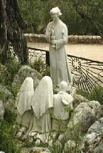
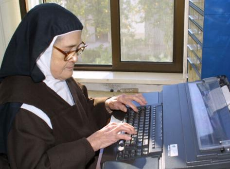
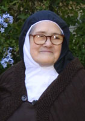
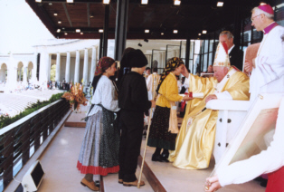
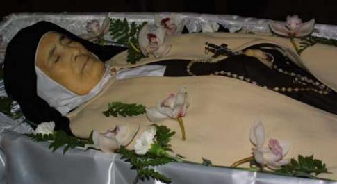
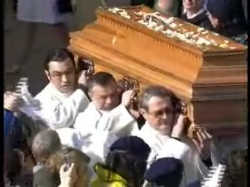
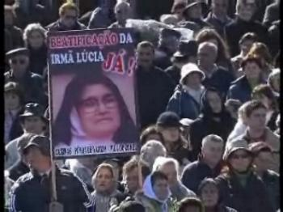

Aljustrel é uma pequena localidade
próximo a Fátima, onde vivem poucas
famílias. Entre elas residiam as
famílias "Dos Santos"
e "Marto"
, que eram parentes. Maria dos Santos teve sete filhos sendo
Lúcia de Jesus (22/03/1907) a última. Sua parenta Olímpia, esposa de Manuel Pedro
Marto, eram os pais de Francisco (11/03/1908) e Jacinta (10/03/1910). Olímpia era
irmã do pai de Lúcia, em consequência Lúcia, Francisco e Jacinta eram primos.
Muitos anos mais tarde, em carta escrita ao
Bispo de Leiria, Lúcia descreve com pormenores comovedores a sua infância
feliz. Sendo a filha mais nova foi muito mimada pelas irmãs mais velhas e era
sempre lembrada nas brincadeiras, nos passeios e nas festas. Também se recorda
com muita ternura e alegria do dia em que fez a primeira comunhão. Descreve
assim: "Já vestida com o meu vestido
branco, a minha irmã Maria levou-me à cozinha para pedir perdão aos meus pais,
para lhes beijar a mão e lhes pedir a benção. Ao terminar esta cerimônia, a
mãe fez-me as últimas recomendações. Disse-me o que eu devia pedir a NOSSO
SENHOR, quando ELE estivesse dentro de meu peito e deixou-me com estas palavras:
Sobretudo pede a NOSSO SENHOR que faça de ti uma Santa. Estas palavras ficaram
gravadas de forma inesquecível no meu coração e foram as primeiras que eu
disse a NOSSO SENHOR depois de o ter recebido".
A amizade com os primos Francisco e Jacinta
cresceu quando eles foram juntos apascentar as ovelhas. Francisco era um
menino tranquilo e um pouco calado. Só falava o absolutamente necessário,
assim mesmo, depois de muita insistência. Gostava da solidão e só participava
dos jogos quando era convidado. Gostava de tocar pífaro, de cantar e também
tinha prazer em admirar a natureza. Sempre dava de comer as aves, brincava com
os lagartos e as cobras pequenas, aos quais dava o leite das ovelhas. Jacinta
tinha o gênio completamente diferente do irmão: era sensível e cuidadosa, era
muito viva, esperta e teimosa, mas era também muito delicada e gentil. Ela
também gostava dos animais, sempre brincava com os cordeirinhos e as vezes
levava um para casa nas costas, para o animal não se cansar.
Durante as Aparições do Anjo, eles tiveram
a oportunidade de sentir a magnitude do delicioso prazer de estar diante do
sobrenatural, embora fosse apenas o prelúdio do extraordinário evento que
estava para acontecer. Foi como se a visita do Anjo, fosse um meio de prepara-los,
para o incomparável evento da suprema visita da MÃE DE DEUS.
Quando NOSSA SENHORA os visitou,
transformou os seus dias numa 
felicidade sem limites. Foram
inundados pela imensidão do Amor de DEUS e suas vidas se transformou numa
doce e terna preocupação de querer retribuir, para agradar muito mais a DEUS e
a VIRGEM MARIA. Rezavam com fervor, flagelavam o corpo e se submetiam
a duras e difíceis penitencias, por iniciativa própria, objetivando consolar e
desagravar o Sagrado Coração de Jesus e o Imaculado Coração de Maria, por
causa de todas as blasfêmias, das maldades, das injúrias e de todos os pecados
cometidos contra eles.
Mas também foi naquele período que eles
viveram momentos de intensa angústia e aflições. À medida que os fatos
se tornavam do conhecimento público, muita gente levada pelo despeito e pela
inveja criticavam e zombavam deles, pois imaginavam que era mentira ou
brincadeira de mal gosto das crianças. Os seus próprios pais e irmãos,
inicialmente não acreditavam no que os filhos diziam e não lhes davam a
mínima importância. Com a sucessão dos acontecimentos e a continuidade das
Aparições foi que começaram a acreditar. O povo passou a acompanhá-los
nos "encontros com NOSSA
SENHORA", a princípio timidamente, somente
movidos pela curiosidade, embora algumas pessoas ficassem impressionadas
com a simplicidade e a espontaneidade daquelas crianças tão pequenas e com
um comportamento tão adulto, e por isso mesmo, decidiram acreditar. Porque
também elas começaram a perceber os fenômenos que aconteciam na natureza,
quando a MÃE DE DEUS conversava com as crianças: o sol perdia o brilho
e podia-se ver a lua e as estrelas; uma cor amarelada envolvia toda a
atmosfera; uma pequena nuvem envolvia a azinheira onde estava a VIRGEM MARIA
e os videntes; e também, caía do Céu uma chuva de flocos de neve
que não chegava a tocar o chão, mas se desfazia a certa altura. Mas, as
autoridades, pelo contrário, não estavam satisfeitas com aquela aglomeração
e movimentação de pessoas na Cova da Iria e por isso, tentaram por diversos
modos proibir a frequência do povo. Como nada conseguiram, decidiram
pressionar as crianças: primeiro com interrogatórios forçados e depois
com ameaças, chegando ao absurdo de prendê-los na cadeia municipal,
numa cela junto com malfeitores.
Depois das Aparições, a vida dos três
priminhos resumiu-se no ascendente propósito de intensificar as suas orações,
penitências e jejuns, para consolar o SENHOR DEUS e suplicando pela conversão dos pecadores.

Por ordem de seus pais, somente
a Lúcia continuou pastoreando o rebanho de ovelhas, até uma certa época, quando
decidiu ir para o Convento. A Jacinta e o Francisco ficaram com a tarefa de
atender as pessoas que os procuravam, respondendo todas as perguntas que faziam
sobre as Aparições. Mas frequentemente eles desapareciam, sem que ninguém os
pudesse encontrar. É possível que fossem para a gruta do Monte Cabeço e em
companhia de Lúcia, ficassem rezando o Terço, a Oração do Anjo e fazendo
sacrifícios que só NOSSO SENHOR conhece. Quando frequentavam a escola,
aproveitavam a proximidade da Igreja, para visitar JESUS Sacramentado. Jacinta
queria falar e passar muito tempo ao lado de "JESUS escondido". Francisco
também, até faltava as aulas e permanecia na Igreja, ao lado de "JESUS escondido".
No dia 23 de Dezembro de 1918, Francisco e
Jacinta foram atacados por uma epidemia de broncopneumonia que tinha se
alastrado por toda a Europa e adoeceram gravemente. O caso do Francisco foi
mais complicado e o organismo dele não resistiu. Recebeu a Primeira Comunhão
Eucarística com "grande lucidez
e piedade" e ficou radiante de felicidade.
Disse para a Jacinta:
- "Hoje sou mais
feliz do que tu, porque tenho dentro de meu peito "JESUS escondido".
Faleceu no dia seguinte, sexta-feira, dia 4 de
Abril de 1919, às 22 horas, com o rosto iluminado por um sorriso angélico, sem
agonia e nem dores.
Lúcia e Jacinta sentiram muito a morte dele,
principalmente a irmãzinha, por estar com o organismo enfraquecido
pela pneumonia. Nas semanas seguintes, Jacinta contraiu uma pleurisia
purulenta, seguida de outras complicações, que por conselho médico, foi
levada para o Hospital de Vila Nova de Ourém. Muito pouco resolveu a
internação, voltou para casa com uma ferida aberta no peito, à qual devia
fazer curativos diários, e por causa dela sofria muito. Guardava silêncio, não
queria demonstrar o seu sofrimento, porque oferecia todas as suas dores pelos
pecadores, para reparar o Coração Imaculado de Maria, por amor a JESUS e pelo
Santo Padre. Viajou para Lisboa com a mãe, por insistência do Dr. Eurico
Lisboa, que visitava Aljustrel em meados de Janeiro de 1920, porque viu que
ela necessitava de um tratamento mais especializado.
estar com o organismo enfraquecido
pela pneumonia. Nas semanas seguintes, Jacinta contraiu uma pleurisia
purulenta, seguida de outras complicações, que por conselho médico, foi
levada para o Hospital de Vila Nova de Ourém. Muito pouco resolveu a
internação, voltou para casa com uma ferida aberta no peito, à qual devia
fazer curativos diários, e por causa dela sofria muito. Guardava silêncio, não
queria demonstrar o seu sofrimento, porque oferecia todas as suas dores pelos
pecadores, para reparar o Coração Imaculado de Maria, por amor a JESUS e pelo
Santo Padre. Viajou para Lisboa com a mãe, por insistência do Dr. Eurico
Lisboa, que visitava Aljustrel em meados de Janeiro de 1920, porque viu que
ela necessitava de um tratamento mais especializado.
Na capital portuguesa, pelo fato de seu estado
de saúde ser extremamente grave, foi rejeitada por diversas Casas de Saúde e
só encontrou hospedagem na pobreza do Orfanato de NOSSA SENHORA DOS
MILAGRES, na rua da Estrela, 17. Conta a Irmã Superiora, Madre Maria da
Purificação Godinho, que imediatamente reconheceu nela o extraordinário tesouro
que o Céu havia colocado em suas mãos. Sua paciência, o notável espírito de oração
e sua obediência, aliadas a uma inocência belíssima e a uma modéstia nata,
influiu diretamente no comportamento das outras crianças.
Recebia a Sagrada Comunhão diariamente
e sentia-se feliz de viver embaixo do mesmo teto onde estava JESUS
Sacramentado.
 Por mais de uma vez recebeu a visita
de NOSSA SENHORA. Como não tinha mais a Lúcia e o Francisco para confidenciar-lhes
os seus segredos, escolheu a Madre Godinho, a quem chamava de Madrinha. Dentre as
muitas anotações feitas pela Madre das conversas da Jacinta com nossa MÃE
SANTÍSSIMA, relacionamos o seguinte:
Por mais de uma vez recebeu a visita
de NOSSA SENHORA. Como não tinha mais a Lúcia e o Francisco para confidenciar-lhes
os seus segredos, escolheu a Madre Godinho, a quem chamava de Madrinha. Dentre as
muitas anotações feitas pela Madre das conversas da Jacinta com nossa MÃE
SANTÍSSIMA, relacionamos o seguinte:
"Os pecados que levam mais
almas para o Inferno, são os pecados da carne. Hão de vir umas modas que vão ofender
muito a NOSSO SENHOR. As pessoas que servem a DEUS não devem andar com a moda.
A Igreja não tem modas. NOSSO SENHOR é sempre o mesmo. Os pecados do mundo são
muito grandes. As guerras são castigos por causa dos pecados do mundo. NOSSA
SENHORA já não consegue sustar o braço de seu FILHO sobre o mundo. É preciso
fazer penitência."
No dia 2 de Fevereiro de 1920, depois
de se confessar e comungar, foi dizer adeus a "JESUS escondido" no
sacrário da pequena Igreja do Orfanato, porque despedia-se da Casa de NOSSA
SENHORA DOS MILAGRES, para ser internada no Hospital D. Estefânia,
para ser operada.
A operação não deu resultado. Na
sexta-feira, dia 20 de Fevereiro, pediu os últimos Sacramentos, porque
sentia-se muito mal. As 22horas e 30minutos deste dia NOSSA SENHORA
veio buscá-la para o Céu. Jacinta morreu com muita paz, assistida apenas
por uma enfermeira.
Lúcia ficou muito triste quando soube do
acontecimento, principalmente porque estava muito longe e não pode acompanhar
a doença da Jacinta e consolar os seus sofrimentos.
A Jacinta e o Francisco foram beatificados
pelo Papa João Paulo II em cerimônia
solene no Santuário de Fátima no dia 13 de Maio de 2000.
Agora, Lúcia estava só sem os seus queridos
priminhos. Conforme tinha anunciado NOSSA SENHORA, ela ainda ficaria algum tempo
aqui para divulgar e propagar a devoção ao Imaculado Coração de Maria. Lúcia viveu
uma existência de labor, fazia o trabalho de casa e ajudava a mãe nas arrumações
e na costura. Mas em virtude de sua popularidade, por causa das Aparições, todos
queriam vê-la, conversar com ela, pedir orações e inclusive, queria que
ela pegasse em determinados objetos os quais depois eram zelosamente guardados
pelos possuidores como recordação. Visitantes apareciam em quantidade e até
vinham em peregrinação com o objetivo de estar com ela. Ela não se acostumava
com aquela evidência, e também, com aquelas constantes solicitações, porque
representava um sacrifício monstruoso, muito além de seu limite pessoal.
Por isso, as vezes entristecia e não poucas vezes, chorava às
escondidas. Permaneceu nesta
"roda viva", em companhia dos pais
e irmãos, até maio de 1920.
Em 17 de Maio foi admitida no Asilo de Vilar,
na cidade do Porto, dirigido pelas irmãs religiosas de Santa Dorotéia, onde ouviu
a voz de NOSSO SENHOR que a chamou para a vida religiosa. Foi para Tuy na
Espanha e a 2 de Outubro de 1926, entrou no noviciado do Instituto das Irmãs de
Santa Dorotéia. Com o hábito da irmandade, recebeu o nome de Maria Lúcia das
Dores e foi destinada aos trabalhos domésticos. Fez a profissão religiosa dos
votos temporários a 3 de Outubro de 1928 e seis anos depois, em 3 de Outubro
de 1934, fez os votos perpétuos.
Com a eclosão da revolução espanhola em
1936, ela com outras irmãs, foram transferidas para o Colégio de Sardão, em
Vila Nova de Gaia, no Porto. Ali recomeçaram as entrevistas, as constantes
visitas, os inoportunos e exaustivos interrogatórios, que fizeram com que ela
decidisse deixar as Religiosas de Santa Dorotéia e entrar no Convento de Santa
Teresa, para viver isolada do mundo, no claustro. E conseguiu obter, depois de
várias tentativas, a desejada autorização diretamente de Sua Santidade o Papa
Pio XII.
No dia 23 de Março de 1948 entrou no Carmelo
de Coimbra. A 13 de Maio vestiu o hábito das Carmelitas Descalças e a 31 de
Maio de 1949, emitiu a profissão solene com o nome de "Irmã Maria Lúcia de JESUS e do Coração Imaculado".

Desenvolveu uma atividade notável dentro do
Convento em benefício da conversão dos pecadores, incrementou a difusão e a veneração
ao Imaculado Coração de Maria, propagou e estimulou a reza cotidiana do Terço,
se empenhou em orações pela saúde e proteção de Sua Santidade, o Santo Padre o
Papa e também, procurou divulgar com intensidade a Comunhão Reparadora nos cinco
primeiros sábados de cada mês para consolo e desagravo do Sagrado Coração de JESUS
e do Imaculado Coração de Maria. Dedicou sua vida a oração, à contemplação
e a penitência. Também exercitou grande atividade literária e manteve uma imensa
correspondência. Utilizava uma maquina de escrever elétrica com um monitor com
muitas memórias. Escreveu as Suas Memórias (2 volumes) e Apelos da Mensagem de
Fátima, que foram traduzidos em diversos idiomas. Gostava também de confeccionar
trabalhos manuais. Com habilidade e beleza, fabricou milhares de terços. Faleceu
com 97 anos de idade no dia 13 de Fevereiro de 2005, no Carmelo português de Santa
Teresa, em Coimbra. NOSSA SENHORA veio buscá-la às 17horas e 25minutos. O jornal
da Santa Sé "L'Osservatore Romano" escreveu recordando a carmelita:
Fecharam-se docemente aqueles olhos que viram os
OLHOS da VIRGEM. Todas as realidades do país se detiveram para render homenagem
à grandiosa figura de uma pastorinha que com a "força escondida"
da oração e da fé, soube tocar os corações de todos.

Se desejar, clique em uma das duas imagens
abaixo e assista ao vídeo da Transladação do corpo da Irmã Lucia do Cemitério onde
estava, para um Altar na Igreja Santuário de NOSSA SENHORA DE FÁTIMA, onde
se encontram a Jacinta e o Francisco.



Próxima
Página 

 Página Anterior
Página Anterior
Retorna ao Índice